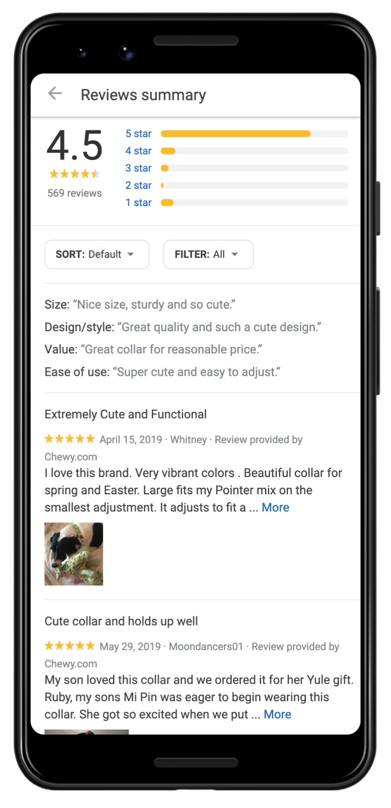

LOCALISATION SUR GOOGLE MAPS
Vous souffrez d’un manque de clients et avez l’impression que votre entreprise n’est pas connue ? bienvenue chez sibeweb Votre Porte d'Entrée vers la Réussite Locale sur Google Maps .Chez sibeweb, nous sommes spécialisés dans l'optimisation de la visibilité en ligne de votre entreprise grâce à une localisation stratégique sur Google Maps. Nos services complets sont conçus pour accroître votre visibilité, renforcer votre crédibilité.
Nous nous assurons que votre entreprise est positionnée de manière précise sur Google Maps, facilitant ainsi la recherche de vos services par les clients potentiels de manière intuitive. Nos services de localisation méticuleux placent littéralement votre entreprise sur la carte numérique.
Intégrez votre Google Maps à votre site Web,poussez encore plus loin votre présence en ligne en intégrant Google Maps directement sur votre site. Cela fournit non seulement des informations précieuses à vos visiteurs, mais contribue également à améliorer le classement dans les moteurs de recherche, rendant votre entreprise plus facilement repérable.
Prêt à améliorer votre présence locale et attirer davantage de clients ? Contactez-nous dès aujourd'hui et laissez sibeweb placer votre entreprise sur la carte, littéralement

Service d'ajout de commentaires et reviews sur Google Maps.
Les bons avis et commentaires sur Google Maps jouent un rôle majeur pour attirer les clients et les touristes vers votre magasin, votre entreprise ou n'importe quel endroit sur la carte. L'ajout d'avis Google sur votre site google maps vous aidera certainement grandement à construire un solide pont de confiance avec des clients potentiels. clients et créer une bonne réputation.pour vous,
Nous excellons dans l'art de placer stratégiquement les avis positifs et des commentaires positifs sur votre profil Google Maps. Ces avis sont conçus pour mettre en avant les points forts de votre entreprise, instiller la confiance et attirer des clients potentiels
Contactez sibeweb Aujourd'hui et élevez votre projet avec notre service spécialisé d'avis sur Google Maps. Contactez-nous dès aujourd'hui pour commencer à bénéficier de l'impact positif des avis stratégiquement placés sur votre présence en ligne.

Pourquoi ces services sont-ils nécessaires à la réussite de votre projet ?
Nous ajoutons des avis positifs sur Google Maps pour refléter des expériences positives de clients, renforçant ainsi la confiance et la crédibilité auprès de nouveaux clients. en améliorant votre position sur Google Maps, il devient plus facile pour les clients de rechercher et trouver vos services ou produits.
L'ajout d'avis positifs permet à votre projet de se démarquer, attirant ainsi davantage l'attention des clients potentiels parmi vos concurrents et favoriser l'interaction avec les clients grâce à des avis positifs peut stimuler les ventes et contribuer à la réalisation des objectifs de votre projet.
Pour en savoir plus sur la manière dont nous pouvons soutenir la réussite de votre projet, n'hésitez pas à nous contacter dès aujourd'hui. Nous sommes là pour vous servir et concrétiser votre vision.
Il y a quelques questions fréquemment posées pour en savoir plus.
Foire aux questions
La localisation sur Google Maps est cruciale pour votre entreprise, car elle améliore significativement votre visibilité en ligne, facilitant ainsi la découverte et l'interaction avec vos services par les clients potentiels. Avec un placement précis sur la carte, des avis positifs et une intégration stratégique dans votre site web, vous vous démarquez de la concurrence tout en renforçant la confiance et la crédibilité. Cela peut conduire à une augmentation du trafic, à de meilleurs classements dans les moteurs de recherche, et finalement, à une conversion plus élevée des clients.
Les avis positifs sur Google Maps jouent un rôle crucial dans la construction d'une solide réputation en ligne pour votre entreprise. Ils instaurent la confiance et la confiance chez les clients potentiels, influençant ainsi leur processus de prise de décision. De plus, les entreprises bénéficiant d'avis positifs ont souvent un meilleur classement dans les résultats de recherche locaux, ce qui se traduit par une visibilité accrue et l'attraction de plus de clients. Les retours positifs non seulement démontrent votre fiabilité, mais ils différencient également votre entreprise, vous offrant un avantage concurrentiel dans le paysage numérique.
La localisation sur Google Maps et les avis positifs sont des composants essentiels d'une stratégie SEO locale robuste. Une localisation précise améliore la présence locale de votre entreprise, la rendant plus susceptible d'apparaître dans les résultats de recherche locaux lorsque les clients potentiels recherchent des produits ou services dans votre région. Les avis positifs contribuent à la réputation globale de votre entreprise et, par conséquent, peuvent influencer positivement votre classement dans les résultats de recherche locaux. En combinant ces éléments, nos services renforcent non seulement votre visibilité en ligne, mais renforcent également vos efforts de SEO local, assurant ainsi que votre entreprise reste compétitive dans les recherches locales.
C'est simple ! Contactez-nous ou envoyez votre demande par e-mail, et nous identifierons vos besoins pour proposer des solutions personnalisées afin de commencer à gérer vos travail.
Merci d'avoir choisi sibe web. Nous travaillons à la création d'un excellent site Web pour votre entreprise. Pour demander le service, cliquez sur le lien ci-dessous et remplissez le formulaire et nous vous contacterons dans les plus brefs délais.